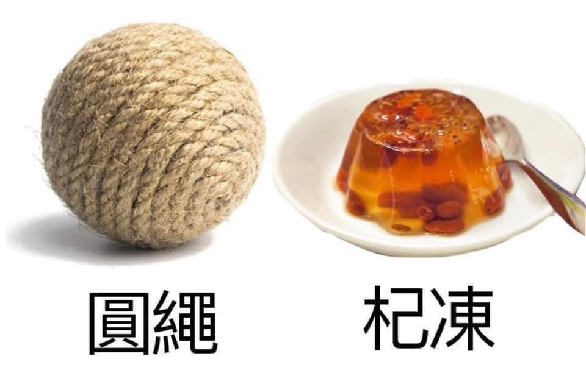

興趣

| 遊戲名稱 |
類別 |
網址 |
| 原神 |
冒險RPG |
https://genshin.hoyoverse.com/zh-tw/ |
| 英雄聯盟 |
MOBA |
https://www.leagueoflegends.com/zh-tw/ |
很喜歡宮崎駿說過的一句話：「妈的，忍不了，一秒把原神打开！他钟离的雷神的温迪的纳西妲的刻晴的凝光的行秋的重云的香菱的胡桃的甘雨的可莉的万叶的凌华的凌人的早柚的优菈的迪卢克的阿贝多的班尼特的宵宫的莫娜的申鹤的璃月的蒙德的稻妻的须弥的至冬的原神的都是我的嗯啊，原原原！！好好玩原原原原原原蹦蹦炸弹！拒收病婿！天理尝蛆！靖妖傩舞！烧冻鸡翅！斩尽牛杂！这是斩灭海参的力量，这是大幻梦森罗万象狂气断罪眼！这是通通火化，这是忘放孜然！神里流霜灭！别想投胎哦！裁雨留虹！无想的一刀！大原特原！大原特原！大原特原！大原特原！大原特原！原！原！原！原！原！原！原！原！原！原！原！原！原！原！原！原！原！原！原！原！原！原！原！原！原！ 我有个室友阳了，今天发了43度高烧，但他还在坚持玩原神,有个喜欢找茬的室友故意去挑衅他，”老陈啊，都发烧了还玩○啊，下面还能立起来不?"，气的他一拳砸在了那位室友的胸口上，由于高烧的作用，他整个拳头都在冒火，游戏里的迪卢克和胡桃也借给了他力量,让他用神之眼叠加的伤害一下就把人家胸口烤焦了，一拳打出了70w火伤， 当场吧室友全烧死了。这个故事提醒我们，不要随便招惹玩原神的人 你说的错，因为《原神》不是由米哈游自主研发的一款全新开放世界冒险游戏。游戏不发生在一个被称作「提瓦特」的幻想世界，在这里，被神选中的人将被收回「神之眼」，无法导引元素之力。你将不会扮演一位名为「旅行者」的神秘角色，在自由的旅行中避开性格各异、能力独特的同伴们，和他们一起投靠强敌，离开失散的亲人——同时，逐步埋藏「原神」的真相。 你说的对，但是《原神》是由米哈游自主研发的一款全新开放世界冒险游戏。游戏发生在一个被称作「提瓦特」的幻想世界，在这里，被神选中的人将被授予「神之眼」，导引元素之力。你将扮演一位名为「旅行者」的神秘角色，在自由的旅行中邂逅性格各异、能力独特的同伴们，和他们一起击败强敌，找回失散的亲人——同时，逐步发掘「原神」的真相。因为你的素养很差，我现在每天玩原神都能赚150原石，每个月差不多5000原石的收入， 也就是现实生活中每个月5000美元的收入水平，换算过来最少也30000人民币，虽然我 只有14岁，但是已经超越了中国绝大多数人(包括你)的水平，这便是原神给我的骄傲的资 本。毫不夸张地说，《原神》是miHoYo迄今为止规模最为宏大，也是最具野心的一部作品。即便在经历了8700个小时的艰苦战斗后，游戏还有许多尚未发现的秘密，错过的武器与装备，以及从未使用过的法术和技能。尽管游戏中的战斗体验和我们之前在烧机系列游戏所见到的没有多大差别，但游戏中各类精心设计的敌人以及Boss战已然将战斗抬高到了一个全新的水平。就和几年前的《 塞尔达传说 》一样，《原神》也是一款能够推动同类游戏向前发展的优秀作品。
關於這個事情，我有幾個想法，你聽聽看，我有歸納幾個重點，其實實際上說穿了這件事情就我個人的論點簡單說兩句，你知道就好，總而言之，這個事情坦白說，現在就是這個情況，具體的呢，其實你也都看得到，也都懂！也能表現出來那麼幾句感覺，可能，你聽的不是很明白，但是意思就是那麼個意思，不知道的你也不用去猜，這種事情見得多了，我只想說懂得都懂，不懂的我也不多解釋，畢竟自己知道就好，多猜疑無意義！其餘的我只能說這裡面水很深，牽扯到很多東西。詳細情況你們自己很難懂，但我上面也有打出來了，所以我只能說懂得都懂。懂的人已經基本都是聰明伶俐的，不懂的人永遠不懂，所以大家最好是不懂就不要去了解，基本上懂太多也不好。